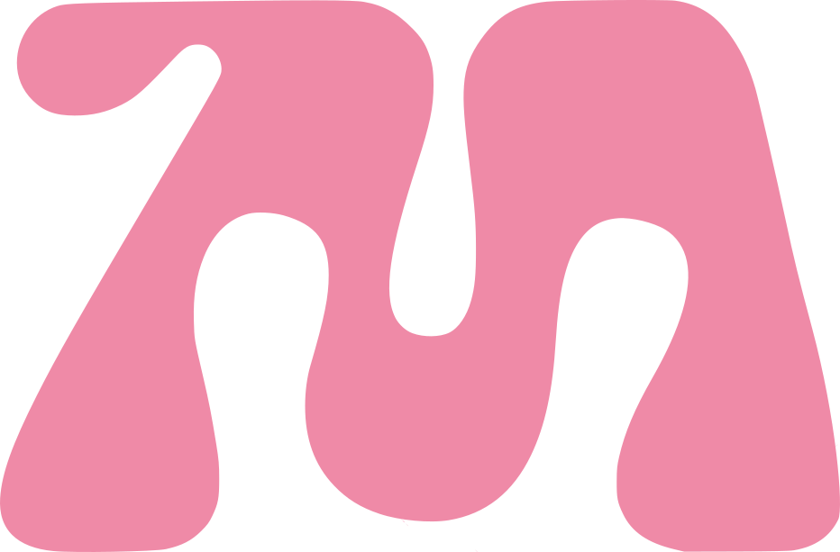
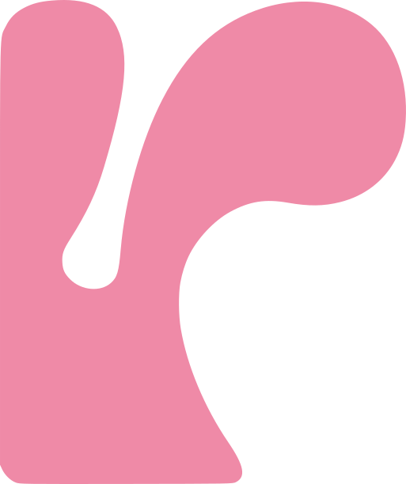
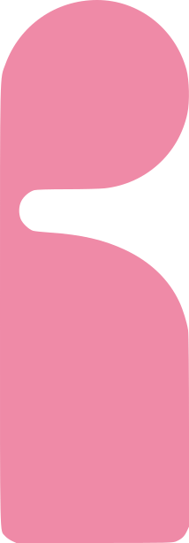
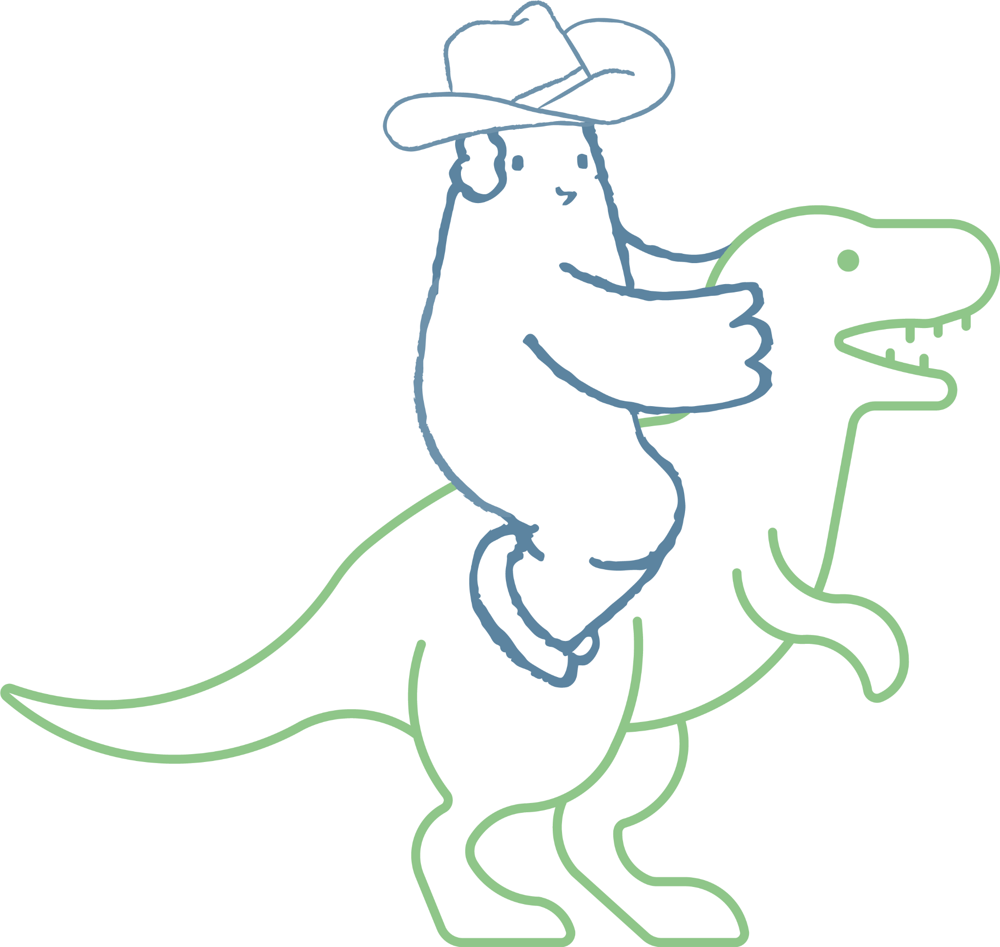
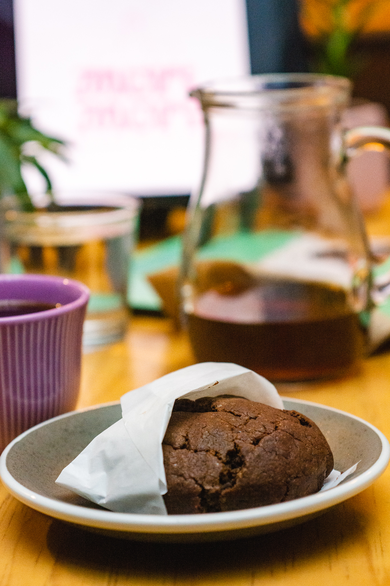
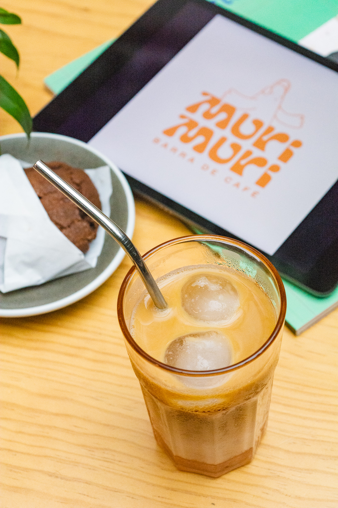
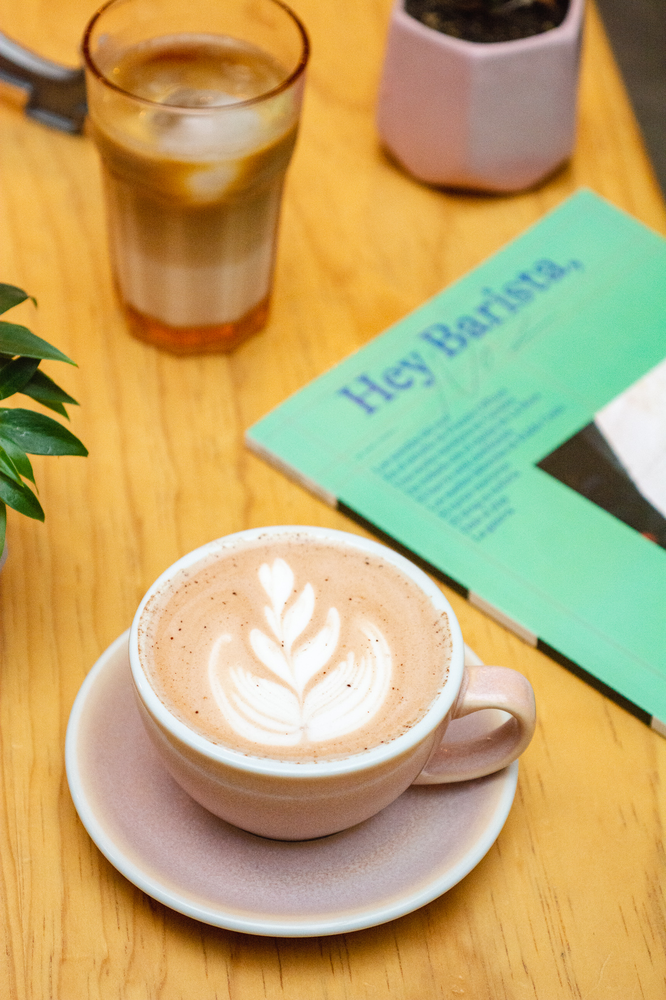
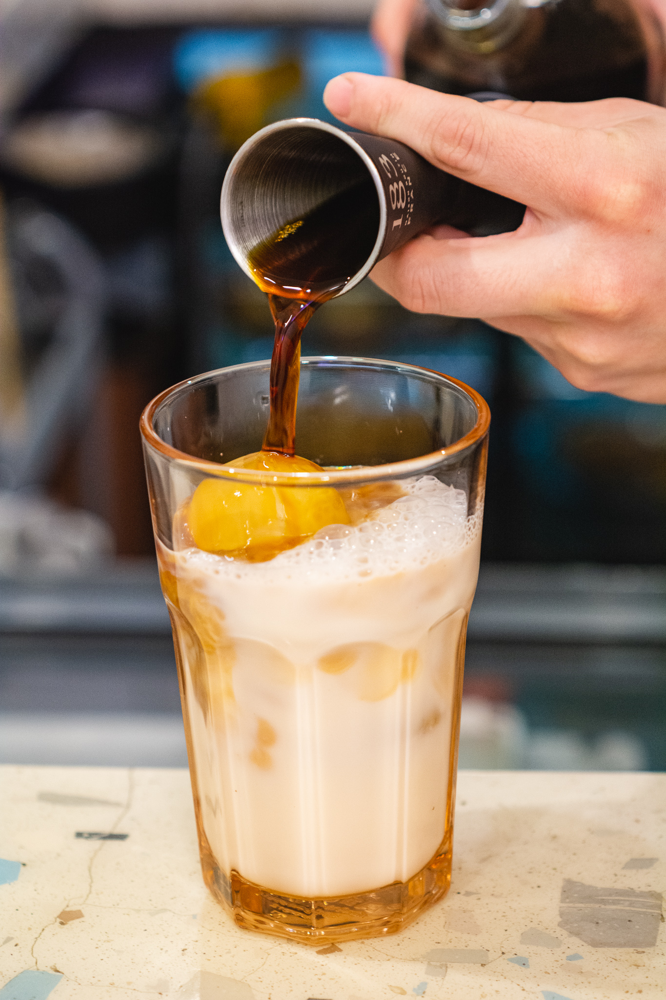

Barra de café · Coyoacán · CDMX




Café con trazabilidad, tostado con intención y servido sin complicarlo de más.
Filtro / espresso / barra / café para llevar
MURI MURI MURI MURI MURI MURI MURI MURI MURI MURI
01 / Hoy en barra
Cafés actuales
Dos cafés de nuestra barra actual, cada uno con su propia historia, origen y forma de preparación.
Espresso · Café actual
San Juan Juquila Vijanos
Ramiro Dominguez
Typica y Marsellesa · Lavado
OrigenSierra Norte, Oaxaca
Altitud1500 msnm
NotasTé limón, miel, cuerpo ligero y nuez
PreparaciónEspresso
Filtro · Espresso · Café actual
Finca El Encanto
Marco Antonio Camargo
Typica, Caturra y Oro Azteca · Natural
OrigenAtoyac de Álvarez, Guerrero
Altitud900–1000 msnm
RelaciónCompramos este café desde 2024
PreparaciónFiltro · Espresso · Omniroast
02 / La barra
Un lugar pequeño, muchas historias



03 / Hecho aquí
Conocer lo que hacemos aquí→Trabajamos pequeño, pero con intención
Horneamos nuestra panadería y galletas, tostamos cacao, hacemos chocolate y helado, creamos bebidas de temporada y abrimos la barra a colaboraciones y cafés invitados.
CAFÉ ORIGEN RELACIÓN CAFÉ ORIGEN RELACIÓN CAFÉ ORIGEN RELACIÓN
04 / Visita
Nos vemos en Coyoacán
Av. México 102 bis
Del Carmen, Coyoacán
CP04100 · Ciudad de México
Emailhola@murimuri.coffee
WhatsApp56 6965 7508
HorarioLu: variable · Ma: 10–14 h · Mi–Do: 10–20 h
